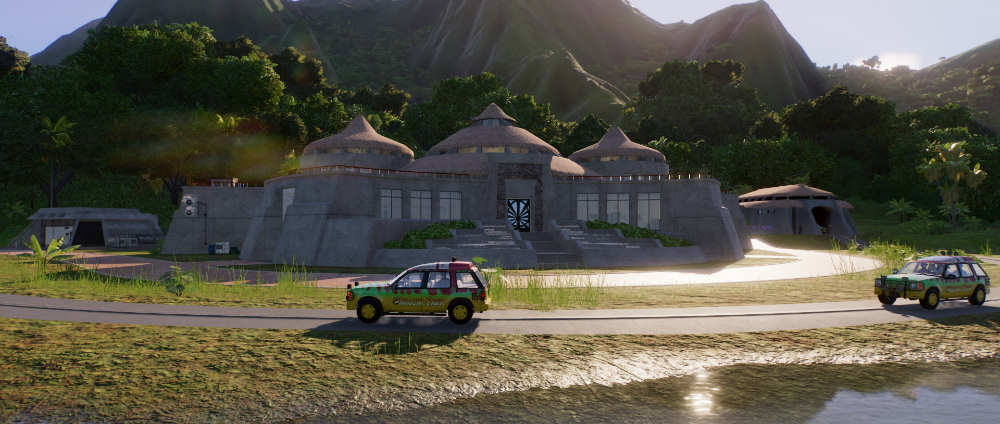

The Visitor Center is where you'll begin your prehistoric adventure. The central rotunda displays the fossilized remains of creatures we have brought back from extinction through the science of genetic engineering. They are a reminder of a past where we could only look at the bones of the now living, breathing creatures of Jurassic Park. The visitor center also offers fine dining at our restaurant, Les Gigantes.